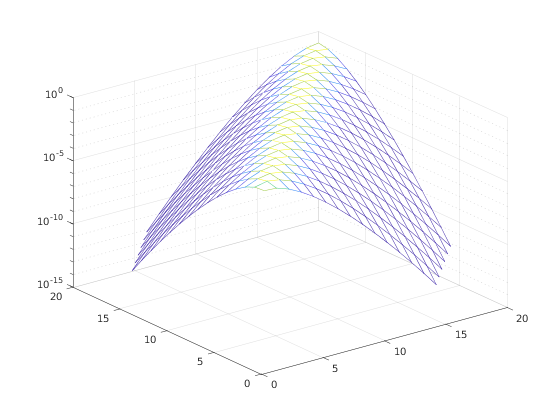

Matrix exponential
Given a $\mathcal{QT}$ matrix $A$, its matrix exponential $e^A$ is again in the $\mathcal{QT}$ algebra. The function expm computes it by using either a Padé expansion or a truncated Taylor series, coupled with an appropriate scaling and squaring technique.
Contents
Syntax
- E = expm(A) computes the matrix exponential.
- E = expm(A, method) selects a specific method for the computation. The second parameter method can be either 'pade' or 'taylor'.
Example
We can use the expm function to verify numerically that the matrix exponential of a banded matrix has exponentially decaying entries, as we move far from the diagonal.
A = cqt([ 3 1 ], [ 3 1 ]); E = expm(-A); mesh(abs(E(1:20, 1:20))); set(gca, 'zscale', 'log')